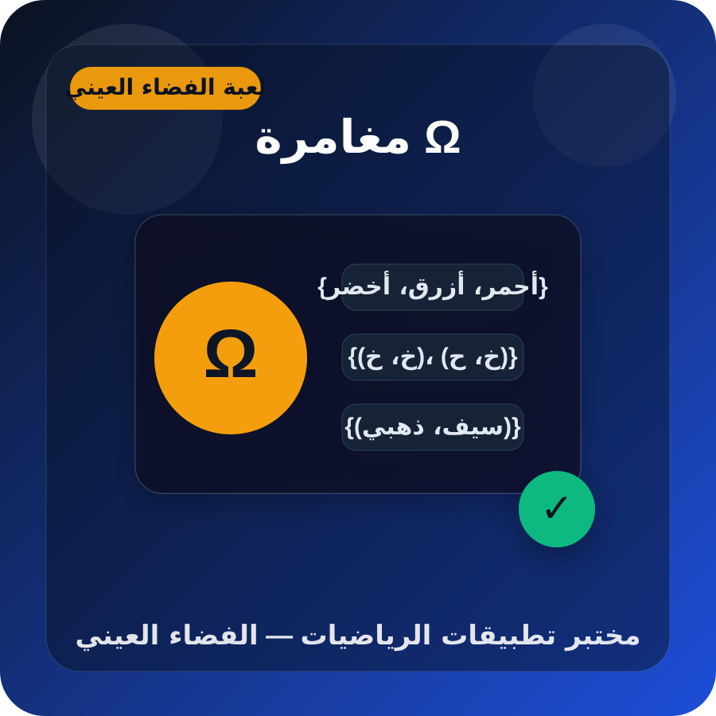
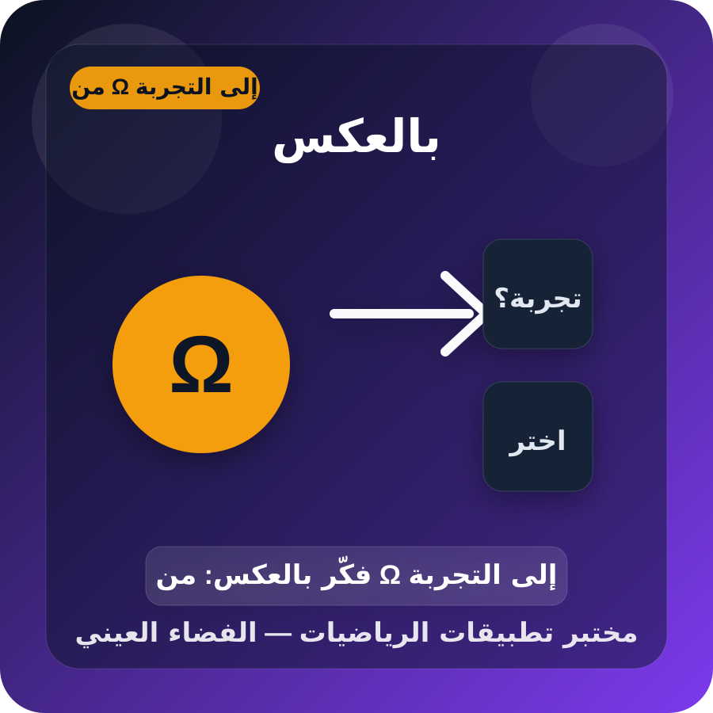

الهدف
نبدأ بتجربة من مرحلة واحدة، ثم ننتقل إلى مرحلتين من النوع نفسه، ثم إلى مرحلتين من نوعين مختلفين.
لعبة تربوية تفاعلية لتعلّم كتابة الفضاء العيني، وعدّ عناصره، والتمييز بين التجربة المناسبة وفضائها العيني، مع أمثلة حياتية ومطابقة ونمط عكسي.
نبدأ بتجربة من مرحلة واحدة، ثم ننتقل إلى مرحلتين من النوع نفسه، ثم إلى مرحلتين من نوعين مختلفين.

اختر بطاقة من العمود الأيسر، ثم اختر البطاقة المناسبة لها من العمود الأيمن.
